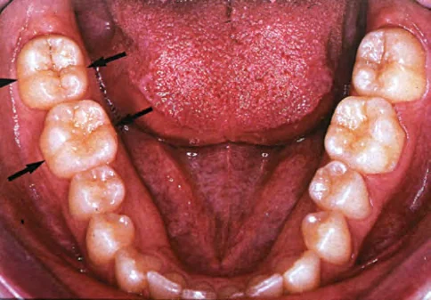
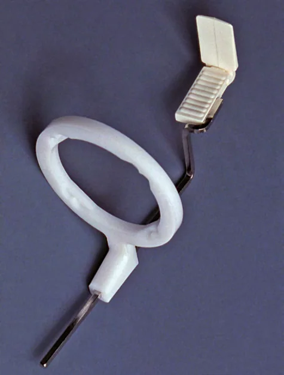
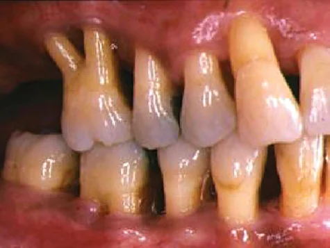

نسخه استخراجشده؛ ترجمه یا تأیید علمی انجام نشده است. وضعیت: captured
رایجترین طبقهبندی درگیری فورکیشن که باید بیمکث بلد باشی:

| درجه | یافته | ورود پروب |
|---|---|---|
| I | ابتدایی؛ پاکت فوقاستخوانی، بدون تحلیل افقی چشمگیر | پروب وارد نمیشود |
| II | «بنبست» (Cul-de-sac)؛ نفوذ افقی ناقص، بخشی از استخوان باقی است | پروب تا حدی وارد میشود |
| III | سرتاسری (Through-and-through) اما پوشیده از لثه | پروب کاملاً عبور میکند |
| IV | سرتاسری و قابل مشاهده بهدلیل تحلیل لثه | پروب عبور میکند و ناحیه با چشم دیده میشود |
⚠️ تفاوت کلیدی III و IV: در هر دو، فورکیشن سرتاسری است؛ تنها تفاوت این است که در درجه IV لثه عقب نشسته و ناحیه با چشم دیده میشود. یعنی تفاوت در وضعیت بافت نرم است، نه در میزان تخریب استخوان.
گلیکمن توصیفی است، هامپ کمّی:

| درجه | نفوذ افقی |
|---|---|
| I | کمتر از ۳ میلیمتر |
| II | ۳ میلیمتر یا بیشتر، اما سرتاسری نیست |
| III | سرتاسری |
📌 هامپ فقط نفوذ افقی را درجهبندی میکند؛ برای تحلیل عمودی داخل فورکیشن از زیرطبقهبندی تارنو و فلچر (A، B، C) استفاده میشود.
پروب خمیده که برای ورود به ناحیه فورکیشن طراحی شده است. سنجش افقی انجام میشود نه عمودی.
در مولرهای فک پایین (دو ریشه) نسبتاً قابل اعتماد است.
در مولرهای فک بالا (سه ریشه) بهدلیل همپوشانی ریشه پالاتال بسیار محدود است و درگیری واقعی را کمبرآورد میکند.
پیکان فورکیشن (Furcation Arrow): سایه مثلثی کوچک در ناحیه فورکیشن مولر بالا که نشانه درگیری است — اما نبودش درگیری را رد نمیکند.
📌 قانون طلایی: تشخیص فورکیشن بالینی است نه رادیوگرافی. رادیوگرافی تنها میتواند درگیری را تأیید کند، نه رد.
قطر دهانه فورکیشن اغلب کمتر از ۰٫۷۵ میلیمتر است، در حالی که عرض تیغه کورتهای معمول ۰٫۷۵ تا ۱٫۱ میلیمتر — یعنی ابزار استاندارد فیزیکاً وارد نمیشود.

تنه ریشه کوتاه ⬅️ درگیری زودتر با تحلیل استخوان کمتر.
تقعرات سطح داخلی ریشهها ⬅️ نواحی غیرقابل دسترس برای هر ابزاری.
زائده مینایی سرویکالی (CEP) ⬅️ نقطه ضعف چسبندگی و مسیر پیشروی بیماری به فورکیشن.
کانالهای فرعی از کف اتاقک پالپ به فورکیشن ⬅️ مسیر ارتباط اندو و پریو.
| درجه | رویکرد درمانی غالب |
|---|---|
| I | درمان غیرجراحی معمولاً کافی است |
| II | اغلب نیازمند مداخله جراحی؛ کاندید بالقوه بازسازی |
| III و IV | تونلسازی، رزکشن ریشه، همیسکشن یا کشیدن |
⚠️ اشتباه رایج ۱: تفاوت درجه III و IV در دیده شدن است، نه در میزان تخریب استخوان.
⚠️ اشتباه رایج ۲: رادیوگرافی درگیری فورکیشن مولر بالا را کمبرآورد میکند.
⚠️ اشتباه رایج ۳: شکست درمان غیرجراحی در فورکیشن، اغلب محدودیت فیزیکی ابزار است نه کممهارتی.